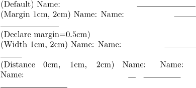

Syntax (autogenerated)
| \setupfillinlines[...=...,...] | |
| before | command |
| after | command |
| margin | dimension |
| width | dimension |
| distance | dimension |
| rulethickness | dimension |
| color | color |
Syntax
| \setupfillinlines[...,...=...,...] | |
| width | dimension width of the line |
| margin | dimension distance from right margin |
| distance | dimension extra distance to field label (there is already some by default) |
| before | command |
| after | command |
Description
Declare the default setup for \fillinline.
Example
-
\setuppapersize[A7] \showframe (Default) \fillinline{Name:} (Margin 1cm, 2cm) \fillinline[margin=1cm]{Name:} \fillinline[margin=2cm]{Name:} (Declare margin=0.5cm) \setupfillinlines[margin=0.5cm] (Width 1cm, 2cm) \fillinline[width=1cm]{Name:} \fillinline[width=2cm]{Name:} (Distance 0cm, 1cm, 2cm) \fillinline[distance=0cm]{Name:} \fillinline[distance=1cm]{Name:} \fillinline[distance=2cm]{Name:}
- 
See also
Help from ConTeXt-Mailinglist/Forum
All issues with: